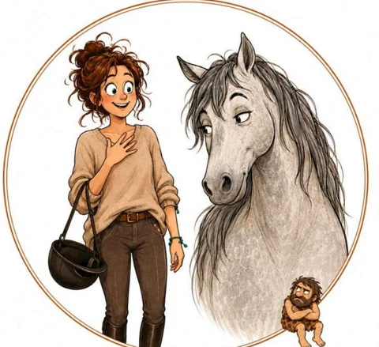
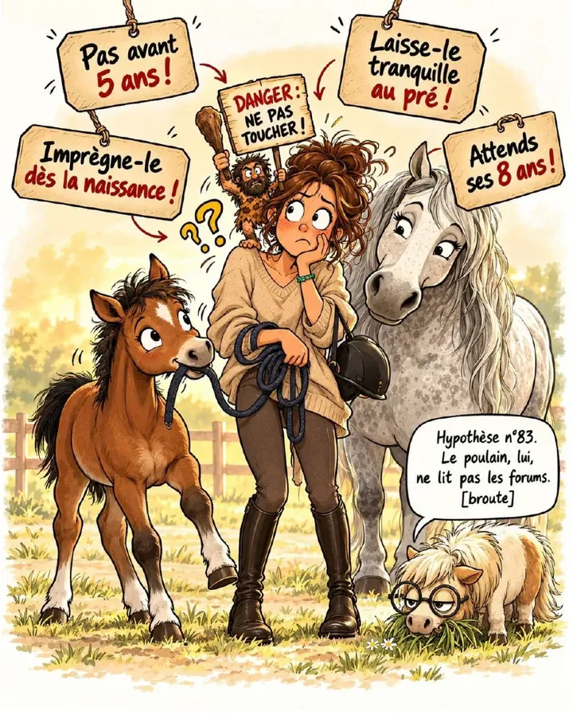

Un livret Mission Connexion, offert
Éduquer tôt, débourrer en douceur
Ce que la science nous apprend sur le bon moment pour éduquer un jeune cheval.
Télécharger le livret ou le lire en lignePDF de 12 pages, environ 15 minutes de lecture.

Ni « tout, tout de suite », ni « rien avant 5 ans ».
Une éducation par petites touches, au bon moment.

Pas avant 5 ans ? Dès la naissance ?
« Pas avant la fin de la croissance. » Tu as sûrement déjà entendu cette phrase. Elle part d'une bonne intention : protéger le jeune cheval. Mais à force de ne regarder que sa croissance, on oublie tout le reste : son cerveau, son corps qui se construit en bougeant, et sa relation avec l'humain.
J'avais une conviction de terrain. J'ai voulu la confronter à la recherche, chez le cheval et chez l'humain. Elle en sort confirmée, et la recherche m'a aidée à mettre des mots plus justes sur ce que je sentais déjà. C'est ce chemin que je partage avec toi dans ce livret.
Ce que tu vas y trouver
Chaque partie part de ma pratique, puis te montre ce que disent les études.
Le poulain apprend par fenêtres
Certaines périodes laissent une trace durable : les premiers jours, et surtout le sevrage.
Le corps se construit en bougeant
Os et cartilage se « programment » pendant la croissance, sous l'effet du mouvement.
L'humain nous éclaire
Là où les études équines manquent, la recherche sur l'enfant confirme le même équilibre.
Et pour passer à la pratique : un calendrier en six phases, de la naissance à 4 ans, mes cinq repères, et toutes les sources pour aller plus loin.
Le bon moment pour bien faire, c'est souvent plus tôt… et plus doucement qu'on ne le croit.
Télécharger le livretEt si ce qui te freine, c'était Robert ?
Derrière « quand commencer ? », il y a souvent une autre question : « et si je m'y prenais mal ? ». On lit tout, on compare tout… et on finit par ne plus oser. Cette petite voix, c'est Robert.
En 2 minutes, découvre ton profil de cavalière intuitive. Tu reçois par email une vidéo choisie pour ta situation.
Tu préfères en parler directement ? Écris-moi en message privé sur Facebook avec le mot VISIO, on cale un moment ensemble.